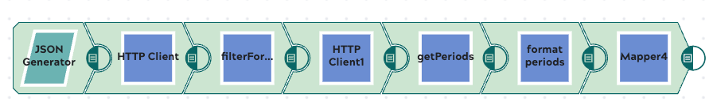
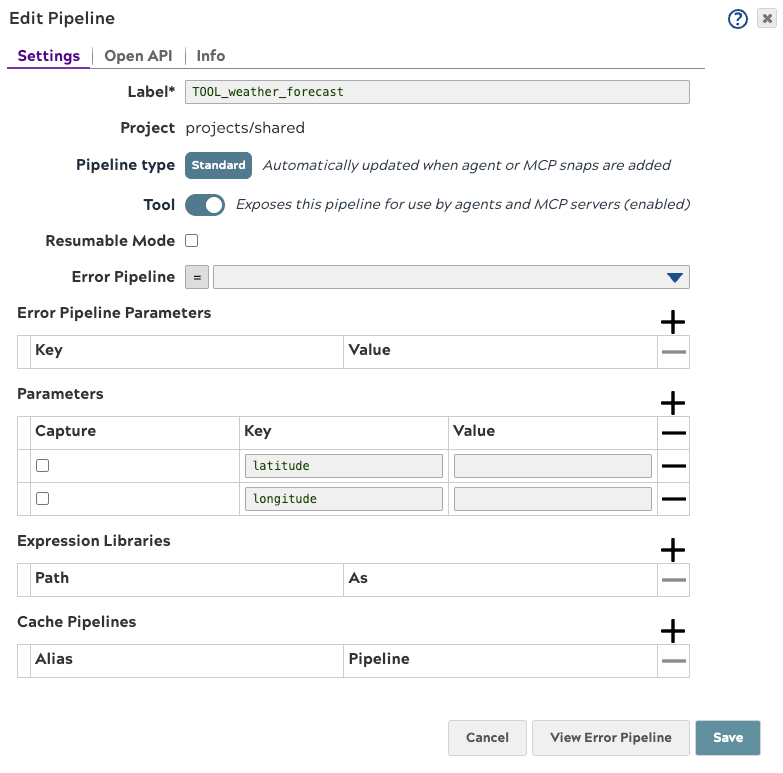
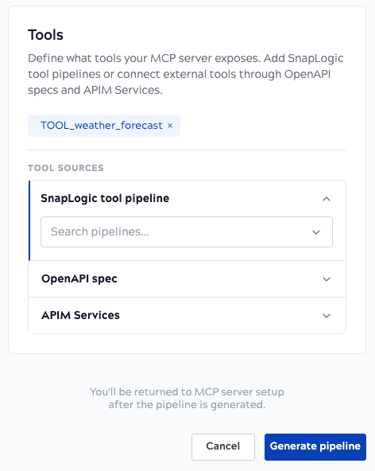
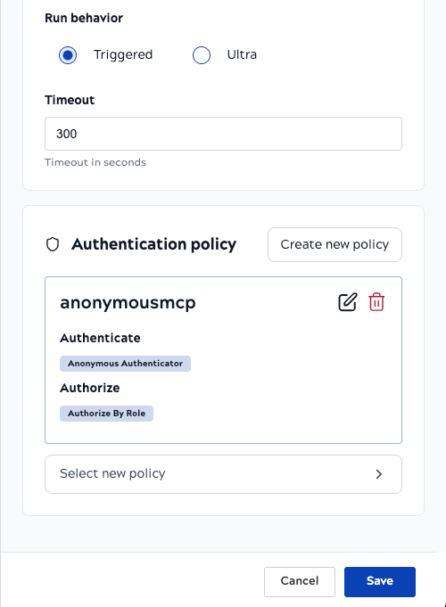
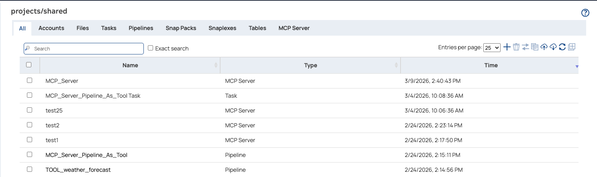
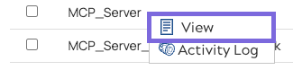
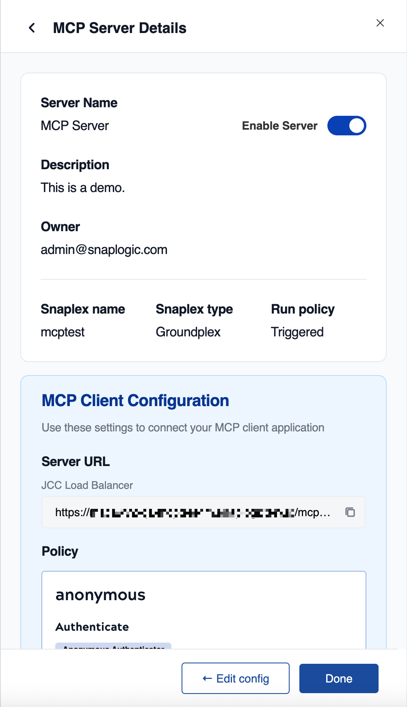
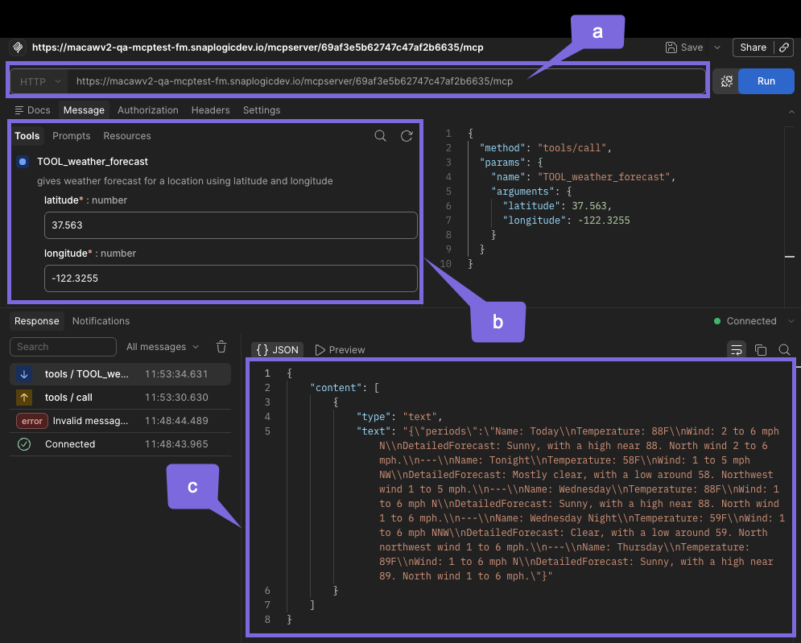

MCP Server Quick Start Tutorial
Get your first SnapLogic MCP Server up and running with this guide covering core concepts, pipeline setup, registration, security, and monitoring.
Introduction to MCP Server in SnapLogic
What is an MCP Server?
The Model Context Protocol (MCP) is a standardized way for AI applications (like Claude, custom AI agents, or chat interfaces) to connect with external tools, datasets, and APIs.
In SnapLogic, an MCP Server allows you to expose your custom SnapLogic pipelines as AI-ready tools. This means you can build a pipeline that performs a specific business task — such as querying a database, fetching real-time weather data, or updating an inventory system — and seamlessly make that capability available to an AI assistant.
Core Concepts
To successfully build and deploy an MCP Server in SnapLogic, you work with two primary types of pipelines:
- Tool Pipeline: The pipeline that performs the actual work (for example, "Get Weather" or "Lookup Customer"). This pipeline must be tagged as a Tool in its pipeline properties.
- MCP Server Pipeline: The pipeline that acts as an orchestrator, exposing your available tools and routing incoming requests to the correct tool pipeline. SnapLogic automatically tags a pipeline as an MCP server when you add an MCP Server Router Snap. The quickest way to create this pipeline is with the MCP Server Pipeline Builder.
Quick Start
Ready to get your first SnapLogic MCP Server up and running? This section provides a high-level overview of the entire process.
Audience
These steps assume you are familiar with the SnapLogic platform, its features and interfaces, and components.
Prerequisites
- Your SnapLogic organization must be subscribed to the MCP Server feature and the MCP Server Snap Pack. If you do not see MCP-related Snaps or dialog options in your environment, contact your SnapLogic CSM to enable this functionality.
- To secure your MCP Server with authentication, your Org must also subscribe to the APIM feature and the Policies Snap Pack. See the enablement requirements in Create Authentication Policy.
- Your SnapLogic environment must have a load balancer configured for your Snaplex. See MCP Server Setup for infrastructure requirements.
Quick Start Workflow
Step 1: Create the tool pipeline
Creating an MCP Server involves a two-layer architecture: Tool Pipelines (the workers) and the MCP Server Pipeline (the router). Start by building the tool pipeline — this is where the actual business logic lives. For example, if you want your AI agent to check the weather, this pipeline makes the API call to the weather service.
The tool pipeline must have exactly one open input view and one open output view.
- Build the logic
- Download this sample pipeline and save it to your local machine.
- Open SnapLogic Designer.
-
Click the Import icon and select
TOOL_weather_forecast.slpfrom your local machine.
- Optional. To verify the pipeline executes correctly before using it as a tool, connect the disabled JSON Generator Snap to the HTTP Client Snap, then open the JSON Generator Settings and in the Snap execution field, select Execute and Validate.
- Optional. Save the Snap settings, and click to validate the pipeline.
- Expose the pipeline as a tool
 Note: The downloaded pipeline already has the Expose this pipeline as a tool
toggle enabled. This tells the MCP Server Pipeline that this pipeline is available as an AI tool. If you build your own
tool pipeline from scratch, open the Edit Pipeline dialog, click the
Tool tab, and enable Expose this pipeline as a
tool.
Note: The downloaded pipeline already has the Expose this pipeline as a tool
toggle enabled. This tells the MCP Server Pipeline that this pipeline is available as an AI tool. If you build your own
tool pipeline from scratch, open the Edit Pipeline dialog, click the
Tool tab, and enable Expose this pipeline as a
tool.

- Define tool inputs and description
Note: The downloaded pipeline already has its tool inputs defined. The
Tool tab includes
latitudeandlongitudeas required number inputs, and a tool description the MCP Server exposes to the AI. When building your own tool pipeline, open the Tool tab, enable Expose this pipeline as a tool, and define your inputs and description there. See Tool tab in Pipeline Properties for details.
Step 2: Register the MCP Server and generate the pipeline
With your tool pipeline ready, open the Create MCP Server dialog to register the server. The MCP Server Pipeline Builder is built into this dialog — you will generate the MCP Server Pipeline and complete registration in one workflow.
- In SnapLogic Designer, click the MCP Server icon in the top navigation ribbon.
- In the Create MCP Server dialog, provide the server
details:
- Name: Enter a clear, identifiable name (for example,
demo_weather_mcp_server). - Description: Optional. Add context for human transparency (for example, "Provides AI access to weather data").
- Name: Enter a clear, identifiable name (for example,
- In the Pipeline field, click Create new pipeline. The MCP Server Pipeline Builder opens.
- In the MCP Server Pipeline Builder's Settings section, confirm the pipeline name
and project.
Note: The MCP Server Pipeline Builder automatically suggests a pipeline name based on the MCP
Server name you entered, appending
_ppl(for example,demo_weather_mcp_server_ppl). - In the MCP Server Pipeline Builder's Tools section, expand SnapLogic
tool pipeline and search for the weather forecast pipeline you imported in
Step 1. Select it — it appears as a chip above the accordion.

- Click Generate pipeline. The MCP Server Pipeline Builder creates the MCP Server Pipeline and automatically selects it in the Pipeline field.
- Back in the Create MCP Server dialog, configure the execution details:
- Authentication Policy: Select an existing policy from the
dropdown, or click Create New Policy to create one directly from this dialog.
Note: The following steps create a basic policy using the Anonymous
Authenticator, suitable for development and testing. For production, use OAuth2 or API
Key authentication instead.
- Click Create New Policy. A visual policy pipeline opens with stages: Validate, Authenticate, Authorize, Shape, and Transform.
- Configure Authentication:
- Click the + under the Authenticate stage.
- For development and testing, select the Anonymous Authenticator. This
assigns a default role (for example,
anonymous) to the incoming request. - For production environments, choose the MCP OAuth2 Client Credential or JWT Validator rules instead.
- Configure Authorization:
- Click the + under the Authorize stage.
- Select Authorize by role.
- Configure it to allow access to the role assigned in the previous step (for
example,
anonymous).
- Name your policy (for example,
MCP_Basic_Auth_Policy) and click Save.

- Review the form and click Save.
Upon saving, SnapLogic registers the server and generates a unique MCP Server URL.
Step 3: Connect and monitor your MCP Server
Connect the client to your MCP Server
- View the MCP Server asset by navigating to the Project Manager via the Waffle menu.

- Click the MCP Server, and in the menu, click View to open the
MCP Server Details page.

- Copy the URL to use for a client connection.

You can connect using SnapLogic's MCP Client Snap Pack, external AI platforms such as Claude Desktop, or 3rd-party API testing tools.
The following image shows a connection via Postman:

| Label | Description |
|---|---|
| a | MCP Server URL |
| b | Tool pipeline input for request |
| c | Response from tool pipeline |
The following code snippet shows a connection example via Claude:
claude mcp add --transport http sl_mcp https://{snaplex-hostname}/mcpserver/{server-id}/mcp
Added HTTP MCP server sl_mcp with URL: https://{snaplex-hostname}/mcpserver/{server-id}/mcp to local config
File modified: /Users/{username}/.claude.json [project: /path/to/project]
/mcp
⎿ MCP dialog dismissed
❯ what is the weather in san francisco?
Thinking…
The user wants to know the weather in San Francisco. I have a weather forecast tool available. San Francisco's coordinates are
approximately 37.7749° N, 122.4194° W.
⏺ sl_mcp - TOOL_weather_forecast (MCP)(latitude: 37.7749, longitude: -122.4194)
⎿ {
"periods": "Name: This Afternoon\nTemperature: 87F\nWind: 7 mph NNW\nDetailedForecast: Sunny. High near 87, with
temperatures falling to around 85 in the afternoon. North northwest wind around 7 mph.\n---\nName: Tonight\nTemperature:
58F\nWind: 2 to 6 mph W\nDetailedForecast: Clear, with a low around 58. West wind 2 to 6 mph.\n---\nName:
Wednesday\nTemperature: 86F\nWind: 2 to 6 mph NW\nDetailedForecast: Sunny. High near 86, with temperatures falling to around
82 in the afternoon. Northwest wind 2 to 6 mph.\n---\nName: Wednesday Night\nTemperature: 58F\nWind: 2 to 6 mph
W\nDetailedForecast: Clear, with a low around 58. West wind 2 to 6 mph.\n---\nName: Thursday\nTemperature: 87F\nWind: 2 to 7
mph N\nDetailedForecast: Sunny, with a high near 87. North wind 2 to 7 mph."Refer to Get Server URL and Connect Client and MCP Client Connection Examples.
Access MCP Server metrics
Visibility into how your AI agents are using your tools is critical for performance tuning, debugging, and security auditing. SnapLogic provides robust, real-time monitoring for your MCP Servers.
You can view all MCP Server traffic in the SnapLogic MCP Metrics page.
- Navigate to the Dashboard or Monitor section of SnapLogic.
- Select MCP Metrics.
- At the top of the dashboard, use the dropdown filters to select your specific MCP Server. You can also filter by time range (for example, Last 1 hour).
For troubleshooting errors, refer to Troubleshooting MCP Server Errors.